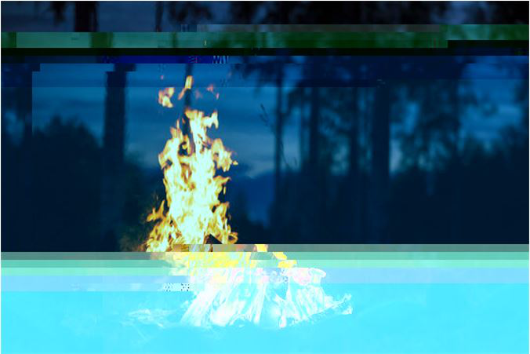
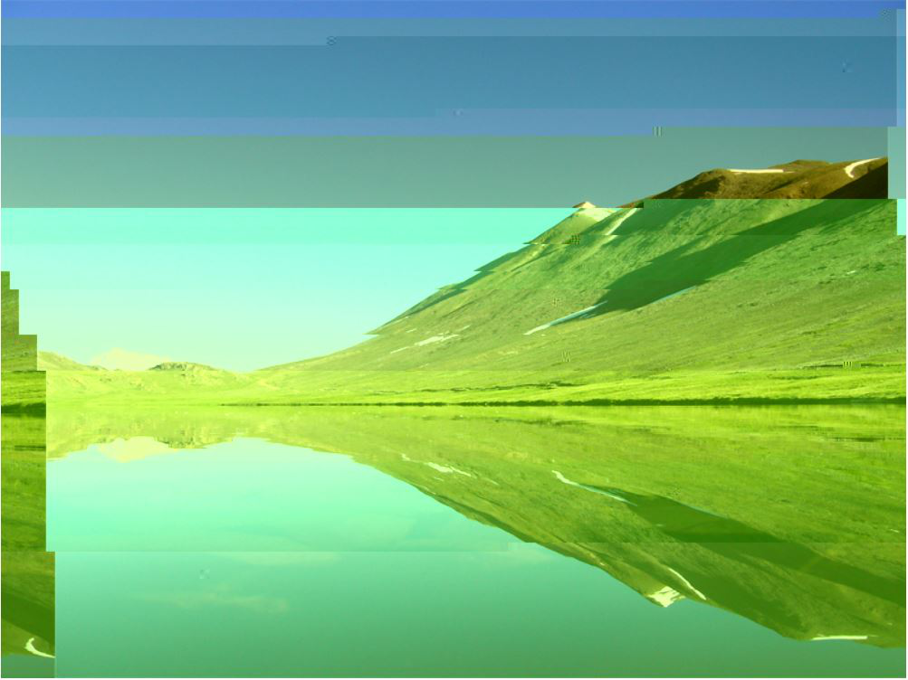
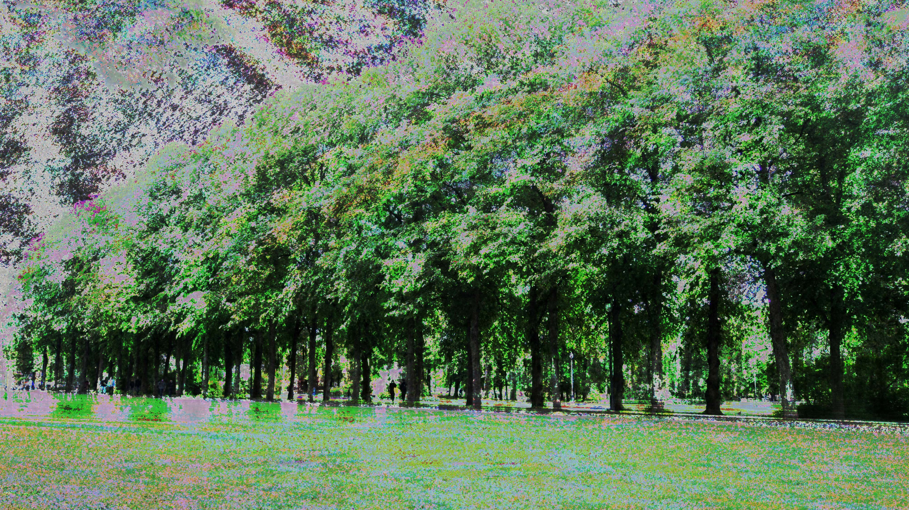
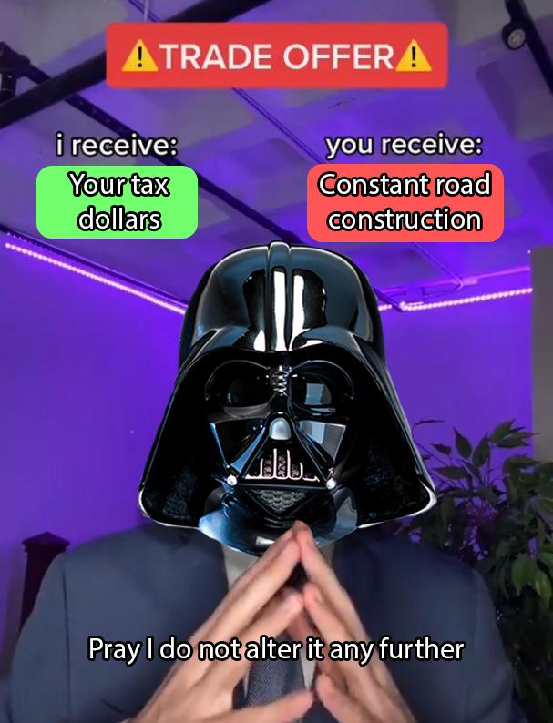
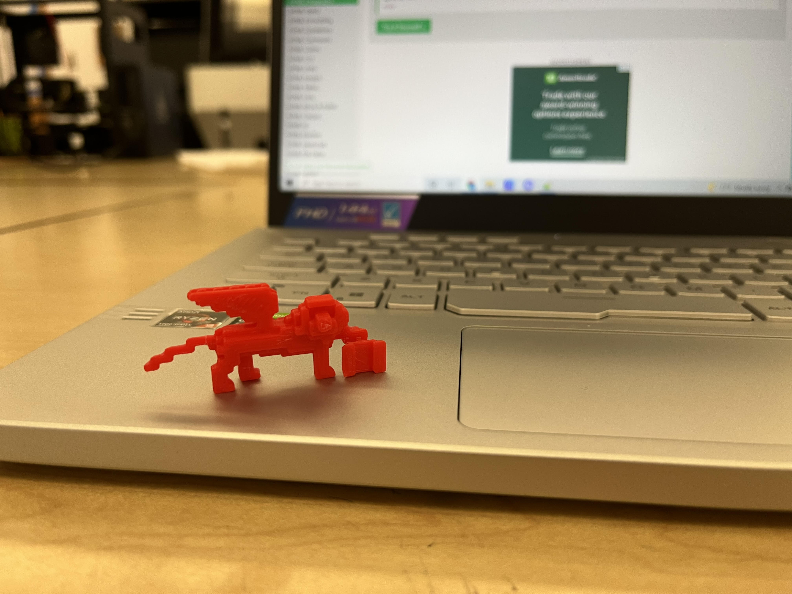
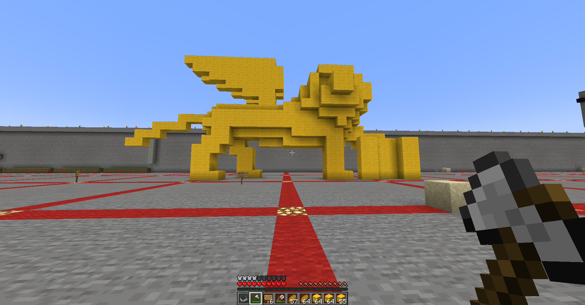
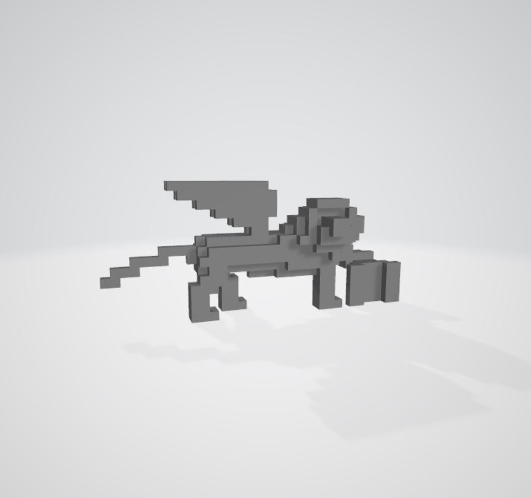
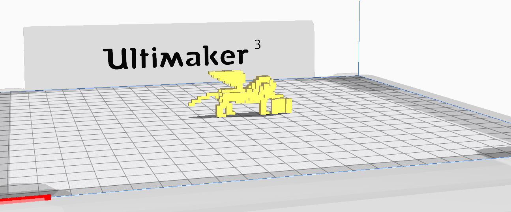
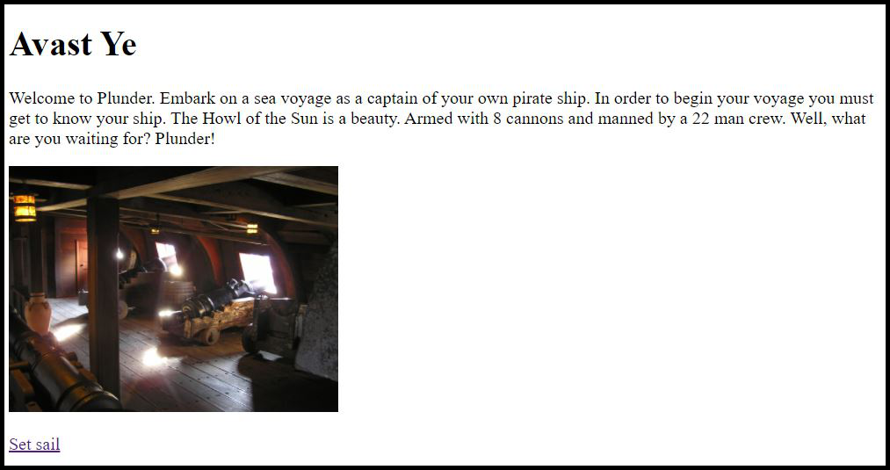

Artworks from the Art 74 Class
Down below are 7 artworks I created for the Introduction to Digital Media class (Art 12, Professor James Morgan)
Glitched Nature, 2021
Utilizing the programs Notepad ++ and Audacity, I created these three glitched images of nature via the techniques learned in class. In Notepad ++ I opened the source code of the first 2 images and added or removed letters and digits from it in order to warp and distort the light and shape of the original image. For the third image, the image’s source code was converted into a raw sound source. Using the various sound effects from the program, I warped the sound and exported it and converted it back into an image. The use of nature images were to juxtapose the glitch effects applied to the images. (first two images use Notepad++, last image uses Audacity)



Meme Mashup, 2021
My meme mashup is the result of combining the 2 meme templates of the “Trade Offer” meme (Second to last image) and the “I am altering the deal” meme (Last image). In order to give new meaning by mashing these two memes together, I also added to the template by making a trade offer. This trade offer was a satirical joke about how much constant construction there is here in the silicon valley.


3D Printed Lion, 2021
For this project, we had to build something of cultural significance to us in Minecraft then print it in a 3d printer. In Minecraft, I built the Lion of Saint Mark which is culturally significant to me because it is an important symbol of Venice, a city in the region of Italy where my Mom and her family is from. After building the Lion, I extracted it using Mineways and exported it as a 3d file. Using the Cura Ultimaker, I printed the first draft and made some changes. Then I used the Lulzbot Mini 2 to print the final draft. (First Image is the final draft, second image is the first draft, last images are the reference, minecraft build and 3d modeling screenshots)






Plunder, 2021
The project was to make a website art piece using multiple different web pages linked together with HTML. I decided to take a choose your own path game approach to the concept because I like the idea of linking different web pages as game phases. I centered the game around being the captain of a pirate ship where your goal is to plunder a merchant’s ship, but avoid the storm at all costs.
Click on the image below to play Plunder

Selfie, 2021
For this project, we had to use p5.js, a JavaScript Processing code, in order to create a rendition of ourselves. In my case, I use different shapes, colors, outlines, and shading in order to make an accurate rendition of my likeness.
Floor is Lava, 2021
Similar to the Selfie project, I used p5.js to create a rendition of the classic game of ‘The floor is lava’. Using the mouse cursor, hover over the furniture you can stand on in order to increase your score. As the game progresses, the furniture changes and also gets smaller and smaller inversely proportional to the score increase.
Dreamer's Sleep, 2021
For the final project of the Art-74 class, I decided to create an art piece on the topic of sleep paralysis and lucid dreaming. I took pictures from my bed in the common locations that I am in during my sleep paralysis and lucid dreams and modified them with Photoshop and Audacity glitches. The first set of images depicts the upward position of sleep and the lucid dreams of drowning or sinking. The second images have depictions of a room on fire due to the lucid dreams I would have in the side sleeping position. Lastly, the final images depict the multiple sleep paralysis demons I would see in my sleep, a shadow, eyes in the doorway, and warped hands.